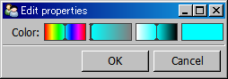
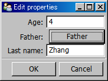
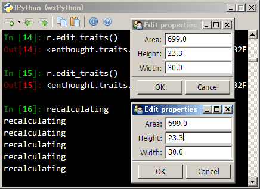
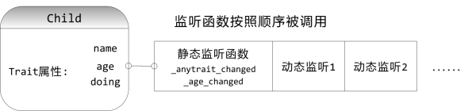

Traits-为Python添加类型定义
Python作为一种动态编程语言，它的变量没有类型，这种灵活性给快速开发带来很多便利，不过它也不是没有缺点。Traits库的一个很重要的目的就是为了解决这些缺点所带来的问题。
背景
Traits库最初是为了开发Chaco(一个2D绘图库)而设计的，绘图库中有很多绘图用的对象，每个对象都有很多例如线型、颜色、字体之类的属性。为了方便用户使用，每个属性可以允许多种形式的值。例如，颜色属性可以是
- 'red'
- 0xff0000
- (255, 0, 0)
也就是说可以用字符串、整数、组元等类型的值表达颜色，这样的需求初看起来用Python的无类型变量是一个很好的选择，因为我们可以把各种各样的值赋值给颜色属性。但是颜色属性虽然可以接受多样的值，却不是能接受所有的值，比如"abc"、0.5等等就不能很好地表示颜色。而且虽然为了方便用户使用，对外的接口可以接受各种各样形式的值，但是在内部必须有一个统一的表达方式来简化程序的实现。
用Trait属性可以很好地解决这样的问题:
- 它可以接受能表示颜色的各种类型的值
- 当给它赋值为不能表达颜色的值时，它能够立即捕捉到错误，并且提供一个有用的错误报告，告诉用户它能够接受什么样的值
- 它提供一个内部的标准的颜色表达方式
让我们来看一下使用traits属性表示颜色的例子:
from enthought.traits.api import HasTraits, Color
class Circle(HasTraits):
color = Color
这个程序从enthought.traits.api中导入我们需要使用的两个对象: HasTraits和Color。所有拥有trait属性的类都需要从HasTraits继承。由于Python的多继承特性，我们很容易将现有的类改为支持trait属性。Color是一个TraitFactory对象，我们在Circle类的定义中用它来声明一个color属性。
熟悉Python的朋友可能会对这个程序觉得有些奇怪：按照标准的Python语法，直接在class下定义的属性color应该是属于Circle类的属性。而我们这里是希望给Circle类的实例一个color属性，是不是应该在初始化函数__init__中运行color = Color呢？答案是否定的，请记住trait属性像类的属性一样定义，像实例的属性一样使用，我们不管HasTraits是如何实现这一点的，先来看看如何使用trait属性:
>>> c = Circle()
>>> Circle.color
Traceback (most recent call last):
AttributeError: type object 'Circle' has no attribute 'color'
>>> c.color
wx.Colour(255, 255, 255, 255)
我们看到Circle类没有color属性，而它的实例c则有一个color属性，其缺省值为wx.Colour(255, 255, 255, 255)。
>>> c.color = "red"
>>> c.color
wx.Colour(255, 0, 0, 255)
>>> c.color = 0x00ff00
>>> c.color
wx.Colour(0, 255, 0, 255)
>>> c.color = (0, 255, 255)
>>> c.color
wx.Colour(0, 255, 255, 255)
>>> c.color = 0.5
Traceback (most recent call last):
File "c:\python25\lib\site-packages\Traits-3.1.0-py2.5-win32.egg\enthought\
traits\trait_handlers.py", line 175, in error value )
TraitError: The 'color' trait of a Circle instance must be a string of the form
(r,g,b) or (r,g,b,a) where r, g, b, and a are integers from 0 to 255, a wx.Colour
instance, an integer which in hex is of the form 0xRRGGBB, where RR is red, GG is
green, and BB is blue or 'aquamarine' or 'black' or 'blue violet' or 'blue' or
'brown' or 'cadet blue' or 'coral' or 'cornflower blue' or 'cyan' or ...此处略去N
多英文颜色名... or 'yellow', but a value of 0.5 <type 'float'> was specified.
c.color支持"red"、0x00ff00和(0, 255, 255)等值。但它不支持0.5这样的浮点数，于是一个很详细的出错信息告诉我们它所有能支持的值。
在开始下一节之前，最后来看一个很酷的东西:
>>> c.configure_traits()
True
>>> c.color
wx.Colour(64, 34, 117, 255)
执行c.configure_traits()之后，出现如下的对话框以供我们修改颜色属性，任意选择一个颜色、按OK按钮，看到configure_traits函数返回True，而c.color已经变为我们所选择的颜色了。注意你需要在iPython -wthread或者spyder下运行此函数，否则会出现对话框不响应的问题。

自动生成的修改颜色Trait属性的对话框
Traits是什么
trait为Python对象的属性增加了类型定义的功能，此外还提供了如下的额外功能：
- 初始化：每个trait属性都定义有自己的缺省值，这个缺省值用来初始化属性
- 验证：基于trait的属性都有明确的类型定义，只有满足定义的值才能赋值给属性
- 委托：trait属性的值可以委托给其他对象的属性
- 监听：trait属性的值的改变可以触发指定的函数的运行
- 可视化：拥有trait属性的对象可以很方便地提供一个用户界面交互式地改变trait属性的值
下面这个简单的例子展示了trait所提供的这五项能力：
from enthought.traits.api import Delegate, HasTraits, Instance, Int, Str
class Parent ( HasTraits ):
# 初始化: last_name被初始化为'Zhang'
last_name = Str( 'Zhang' )
class Child ( HasTraits ):
age = Int
# 验证: father属性的值必须是Parent类的实例
father = Instance( Parent )
# 委托: Child的实例的last_name属性委托给其father属性的last_name
last_name = Delegate( 'father' )
# 监听: 当age属性的值被修改时，下面的函数将被运行
def _age_changed ( self, old, new ):
print 'Age changed from %s to %s ' % ( old, new )
下面用这两个类创建立两个实例:
>>> p = Parent()
>>> c = Child()
由于没有设置c的father属性，因此无法获得它的last_name属性:
>>> c.last_name
Traceback (most recent call last):
AttributeError: 'NoneType' object has no attribute 'last_name'
设置father属性之后，我们就可以得到c的last_name了:
>>> c.father = p
>>> c.last_name
'Zhang'
设置c的age属性将触发_age_changed方法的执行:
>>> c.age = 4
Age changed from 0 to 4
调用configure_traits:
>>> c.configure_traits()
True
弹出一个如下的对话框，用户可以通过它修改c的trait属性，

为Child类自动生成的属性修改对话框
可以看到属性按照其英文名排序，垂直排为一列。由于father属性是Parent类的实例，所以它给我们一个按钮，点此按钮出现下面的设置father对象的tratis属性的对话框
点击Child对话框中的Father按钮之后，弹出编辑father属性的对话框
在上面这个对话框中修改father的Last name，可以看到child的Last name属性也随之发生变化。
我们可以调用print_traits方法输出所有的trait属性与其值:
>>> c.print_traits()
age: 4
father: <__main__.Parent object at 0x13B49120>
last_name: u'Zhang'
调用get方法获得一个描述对象所有trait属性的dict:
>>> c.get()
{'age': 4, 'last_name': u'Zhang', 'father': <__main__.Parent object at 0x13B49120>}
此外还可以调用set方法设置trait属性的值，set方法可以同时配置多个trait的属性:
>>> c.set(age = 6)
Age changed from 4 to 6
<__main__.Child object at 0x13B494B0>
动态添加Trait属性
前面介绍的方法都是在类的定义中声明Trait属性，在类的实例中使用Trait属性。由于Python是动态语言，因此Traits库也提供了为某个特定的实例添加Trait属性的方法。
下面的例子，直接产生HasTraits类的一个实例a, 然后调用其add_trait方法动态地为a添加一个名为x的Trait属性，其类型为Float，初始值为3.0。
>>> from enthought.traits.api import *
>>> a = HasTraits()
>>> a.add_trait("x", Float(3.0))
>>> a.x
3.0
接下来再创建一个HasTraits类的实例b，用add_trait方法为b添加一个属性a，指定其类型为HasTraits类的实例。然后把实例a赋值给实例b的属性a：b.a。
>>> b = HasTraits()
>>> b.add_trait("a", Instance(HasTraits))
>>> b.a = a
然后为实例b添加一个类型为Delegate(代理)的属性y，它是b的属性a所表示的实例的属性x的代理，即b.y是b.a.x的代理。注意我们在用Delegate声明代理时，第一个参数b的一个属性名"a"，第二个参数是是此属性的属性名"x"，modify=True表示可以通过b.y修改b.a.x的值。我们看到当将b.y的值改为10的时候，a.x的值也同时改变了。
>>> b.add_trait("y", Delegate("a", "x", modify=True))
>>> b.y
3.0
>>> b.y = 10
>>> a.x
10.0
Property属性
标准的Python提供了Property功能，Property看起来像对象的一个成员变量，但是在获取它的值或者给它赋值的时候实际上是调用了相应的函数。Traits也提供了类似的功能。让我们先来看一个例子：
# -*- coding: utf-8 -*-
# filename: traits_property.py
from enthought.traits.api import HasTraits, Float, Property, cached_property
class Rectangle(HasTraits):
width = Float(1.0)
height = Float(2.0)
#area是一个属性，当width,height的值变化时，它对应的_get_area函数将被调用
area = Property(depends_on=['width', 'height'])
# 通过cached_property decorator缓存_get_area函数的输出
@cached_property
def _get_area(self):
"""
area的get函数，注意此函数名和对应的Proerty名的关系
"""
print 'recalculating'
return self.width * self.height
在Rectangle类定义中，使用Property()定义了一个area属性。Traits所提供的Property和标准Python的有所不同，Traits中根据属性名直接决定了它的访问函数，当用户读取area值时，将得到_get_area函数的返回值；而设置area的值时，_set_area函数将被调用。此外，通过关键字参数depends_on，指定当width和height属性变化时自动计算area属性。
在_get_area函数用@cached_property进行修饰，使得_get_area函数的返回值将被缓存，除非width和height的值发生变化，否则将一直使用缓存的值。下面我们来看看Rectangle的用法。在traits_property.py的文件夹下，启动IPython -wthread：
>>> run traits_property.py
>>> r = Rectangle()
>>> r.area # <-- 第一次取得area，需要进行运算
recalculating
2.0
>>> r.width = 10
>>> r.area # <--修改width之后，取得area，需要进行计算
recalculating
20.0
>>> r.area # <--width和height都没有发生变化，因此直接返回缓存值，没有重新计算
20.0
我们看到通过depends_on和@cached_property，系统可以跟踪area属性的状态，判断是否需要调用_get_area函数重新计算area的值。注意在运行r.width=10时，并没有立即运行_get_area函数，这是因为系统知道没有任何物体在监听r.area属性，因此它只是保存一个需要重新计算的标志。等到真正需要获取area的值时，再调用_get_area函数。
如果我们调用r.edit_traits()，就会看到depends_on的强大功能了。为了更加有趣一些，这里连续调用两次edit_traits，弹出两个编辑界面：
>>> r.edit_traits()
<enthought.traits.ui.ui.UI object at 0x02FCD420>
>>> r.edit_traits()
<enthought.traits.ui.ui.UI object at 0x02FD68A0>

修改两个对话框中的任意个Height或者Width属性都会重新计算Area，并同时更新对话框显示
然后修改任何一个界面中的width或者height属性，你可以注意到在输入数值的同时，两个界面中的Area，Height和Width等各个文本框同时更新，每次键盘按键都会调用_get_area函数。此时在IPython窗口修改width的值的话，也会调用_get_area函数：
>>> r.width = 25
recalculating
当打开界面之后，界面对象开始监听对象r的各个属性，因此当我们修改r.width之后，系统设置r.area的标志为需要重新计算，然后发现r.area的值有对象在监听，因此直接调用_get_area函数更新其值，并且通知所有的监听对象，因此界面就一齐更新了。
让我们来看看在traits的内部，是如何处理属性值的改变引起界面变化的：
# -*- coding: utf-8 -*-
# filename: traits_listener.py
from enthought.traits.api import *
class Child ( HasTraits ):
name = Str
age = Int
doing = Str
def __str__(self):
return "%s<%x>" % (self.name, id(self))
# 通知: 当age属性的值被修改时，下面的函数将被运行
def _age_changed ( self, old, new ):
print "%s.age changed: form %s to %s" % (self, old, new)
def _anytrait_changed(self, name, old, new):
print "anytrait changed: %s.%s from %s to %s" % (self, name, old, new)
def log_trait_changed(obj, name, old, new):
print "log: %s.%s changed from %s to %s" % (obj, name, old, new)
if __name__ == "__main__":
h = Child(name = "HaiYue", age=4)
k = Child(name = "KaiYu", age=1)
h.on_trait_change(log_trait_changed, name="doing")
Child类有一个age属性，当其值发生变化时，其对应的静态监听函数 _age_changed 将被调用，而 _anytrait_changed则是一个特殊的静态监听函数，HasTraits对象的任何trait属性值的改变都会调用此函数。
log_trait_changed是一个普通函数。通过h.on_trait_change调用动态地将其与h的doing属性联系起来，即当h对象的doing属性改变时，log_trait_changed函数将被调用。
在IPython中运行上面的程序：
>>> run traits_listener.py
anytrait changed: <201ba80>.age from 0 to 4
<201ba80>.age changed: form 0 to 4
anytrait changed: HaiYue<201ba80>.name from to HaiYue
anytrait changed: <201bae0>.age from 0 to 1
<201bae0>.age changed: form 0 to 1
anytrait changed: KaiYu<201bae0>.name from to KaiYu
然后分别改变h和k这两个对象的各个属性：
>>> h.age = 5
anytrait changed: HaiYue<5d87e70>.age from 4 to 5
HaiYue<5d87e70>.age changed: form 4 to 5
>>> h.doing = "sleeping"
anytrait changed: HaiYue<5d87e70>.doing from to sleeping
log: HaiYue<5d87e70>.doing changed from to sleeping
>>> k.doing = "playing"
anytrait changed: KaiYu<5d874e0>.doing from to playing

Trait属性的监听函数的调用顺序
静态监听函数的参数有如下几种形式：
- _age_changed(self)
- _age_changed(self, new)
- _age_changed(self, old, new)
- _age_changed(self, name, old, new)
而动态监听函数的参数有如下几种：
- observer()
- ovserver(new)
- ovserver(name, new)
- ovserver(obj, name, new)
- ovserver(obj, name, old, new)
其中obj表示属性发生变化的对象，name为发生改变的属性名，old为改变前的值，new为现在值。
动态监听函数不但可是普通函数，还可以是某个对象的方法。
当多个trait属性都需要同一个静态监听函数时，用固定函数名就比较麻烦了：你需要写多个_xxx_changed函数，其中再调用某个函数进行同样的处理。Trait库提供的解决方案是：用@on_trait_changed对监听函数进行修饰：